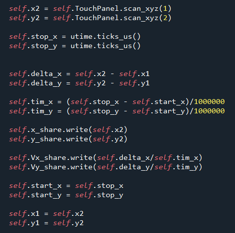
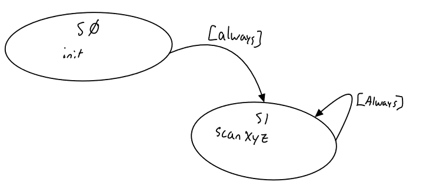
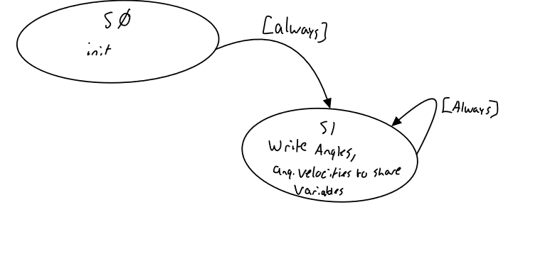
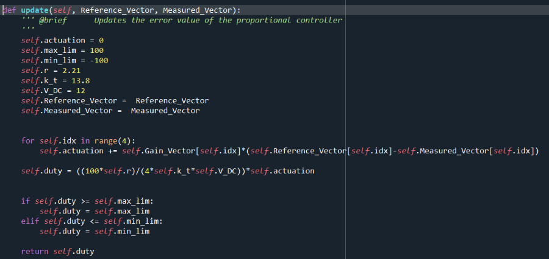
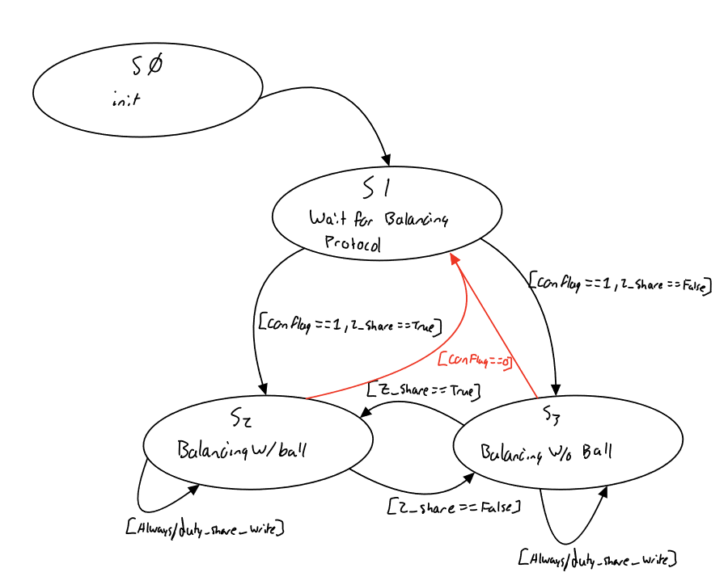
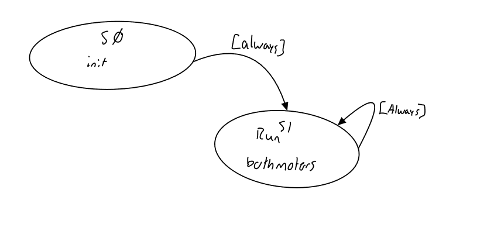
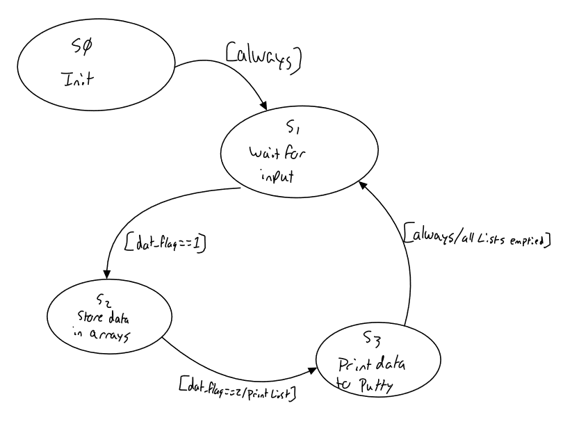
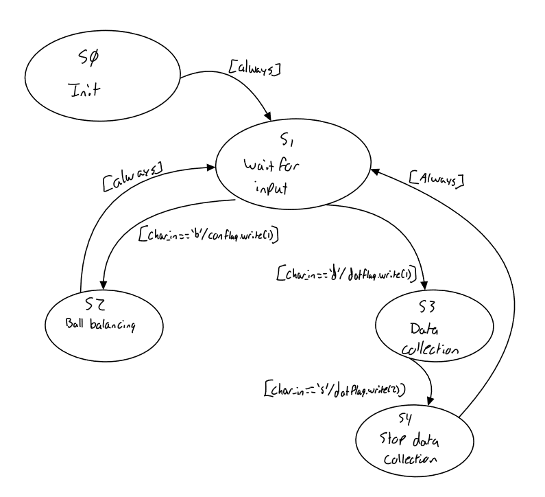
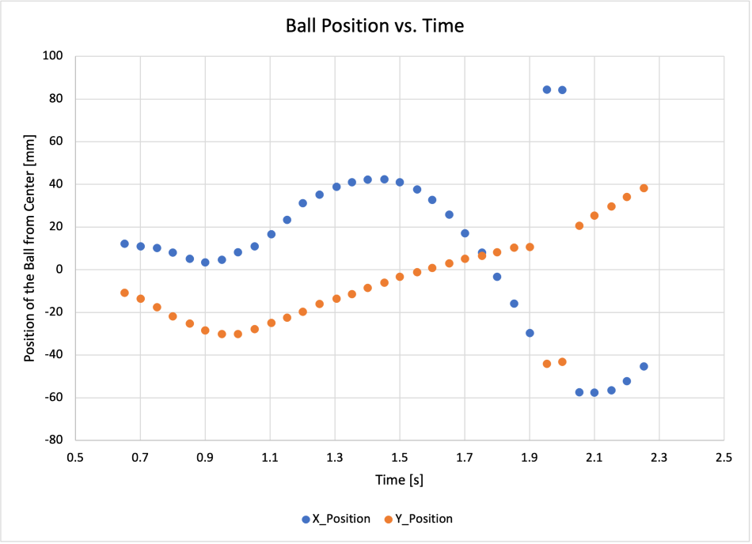
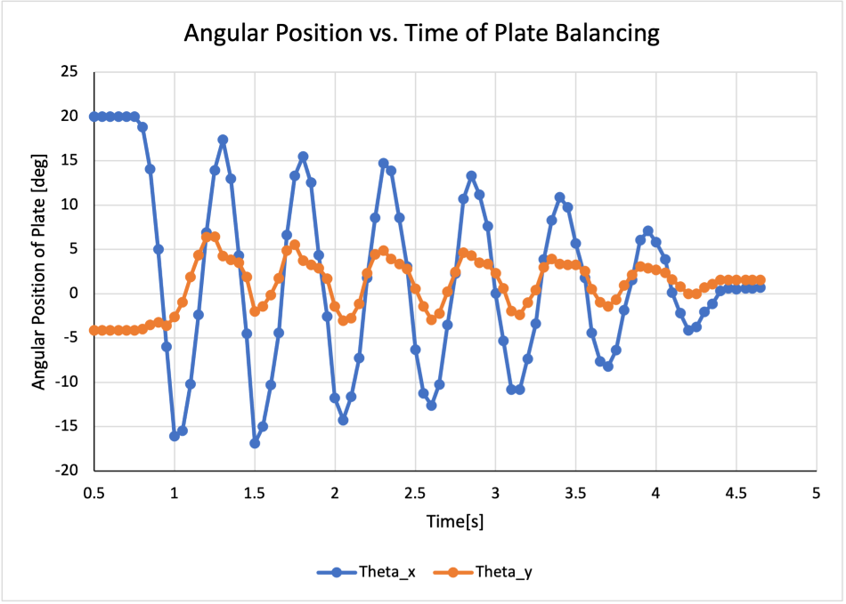

|
My Project
|


|
|
My Project
|
|
In this project, our group utilized everything that we've learned throughout the quarter in order to construct a device that will balance a ball on a touch panel utilizing closed loop feedback. To do this, we constructed various tasks that worked cooperatively. Thes tasks were set to run at different frequencies depending on their function.
The figure below depicts the task diagram that we utilized in order to come up with our class structure. We utilized a large amount of shared variables in order to properly execute the desired function. The following sections will discuss each task in further detail.
The touchpanel task was responsible for collecting data regarding the position and velocity of the ball in the x and y direction. It was also used as a pressure sensor in order to detect when the ball was in contact with the patform. Since the ouchpanel driver that this task utilized only collected information regarding the position of the ball, the respective velocities were calculated within the task using using multiple positional scans and timers as shown below.

These positions and velocities were then stored in shared variables that were sent to the data collection and controller tasks.

Much like the touchpanel task, the IMU task was also responsible for collecting positional and velocity data, however this time with respect to the angular position and velocity of the platform in the x and y axis. This was accompished by utilizing an IMU driver that had functions that would do so, thus the only thing that had to be done in the run phase of this task was to index the correct variable from the tuples generated by the driver. These position and velocity values were then stored into shared variables that would also be utilized by the data and controller tasks. This task was also responsible for calibrating the IMU if it wasn't already, however this was done in the initialization phase.

The controller task was responsible for calculating the duty cycle that would be utilized by the motors. This was done by implimenting a closed loop driver that had an update function in which it would calculate the total error using the shared variables from the touchpanel and IMU tasks, and then multiply it by a set gain vector in order to create an actation torque. this torque was then plugged into the follwing equation in order to generate a duty cycle that would provide the neccesarry corrective action. The controller task utilized two seperate gain values depending on whether or not the ball is in contact with the platform. The controller task is initiated by a flag variable that is activated based on input in the user task.

These duty cycles were then stored into shared variables that would be sent to the motor task and applied to the proper motor.

The motor task was responsible for continuously implimenting the shared duty cycles that were calculated in the controller task. The motor task utilized a motor driver that had functions to set the duty cycle by applying the proper PWM.

The data task was resposible for generating a list of data regarding the position and velocity of the ball and platform. The data task was initiated by a flag variable that activates based on input from the user task. Since lists were used as the form of data collection, the frequency of the task is much lower that the rest in order to prevent a memory failure. The list of data is then shown in puTTY with the use of the stop command.

The user is responsible for providing an interface that will allow the user to begin the balancing protocol as well as data collection. In order to do this, the user task utilizes shared flag variables with the controller and data tasks in order to initiate each of the sequences.

The following videos show our device in action in the cases when it has to balance itsel, and the ball. It was able to balance itself well for small to medium anges, but became unstable for large angles. It was not able to balnce the ball as well as we had hoped. We believe that with more tuning it would be able to perform well, but the fact that we are only using o proporional controller instead on a PI controller is also limiting.
The floowing plots show data gathered on the position of the ball as well an the position of the platform. As shown in the plots, the ball does make an effort to correct itself, but falls of the platform befor doing so. As for the platform, it is able to fully correct itself and go back to a neutral state.


https://bitbucket.org/druiz131/me-305/src/master/Term%20Project/